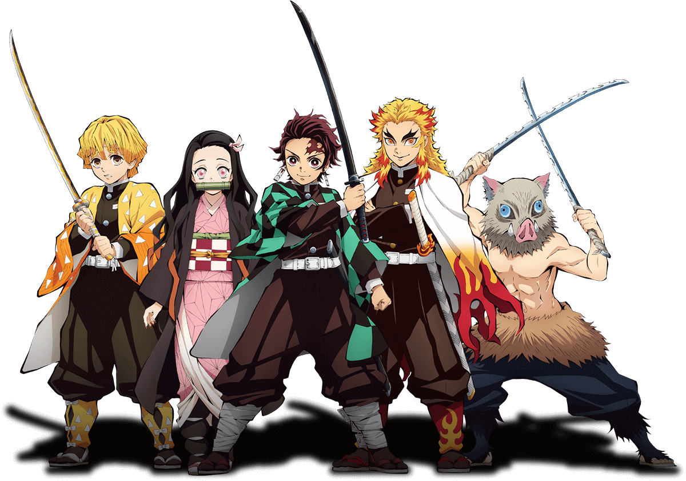
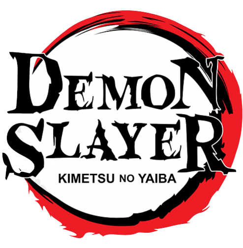
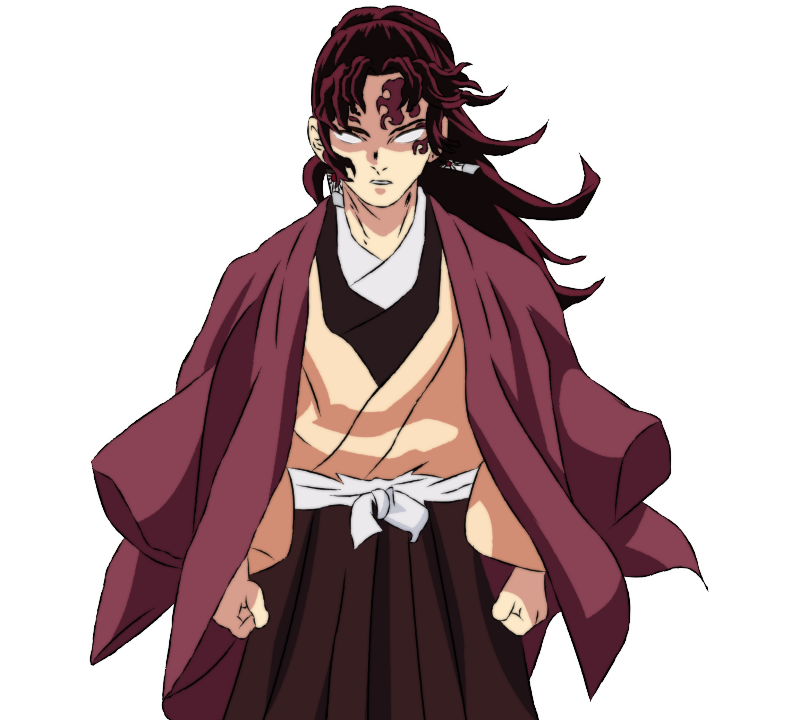
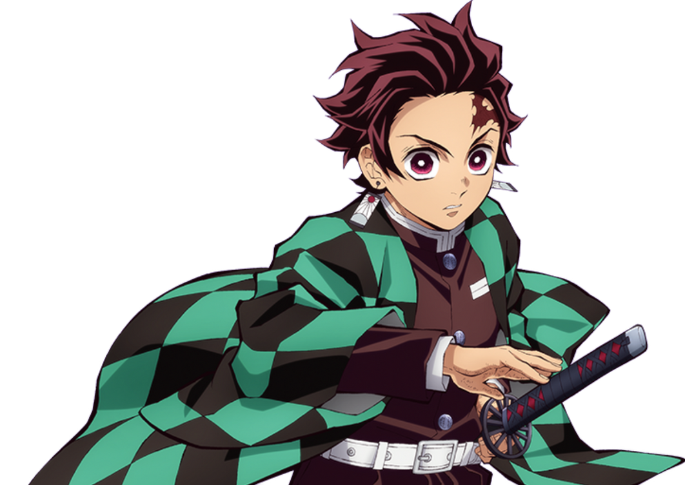
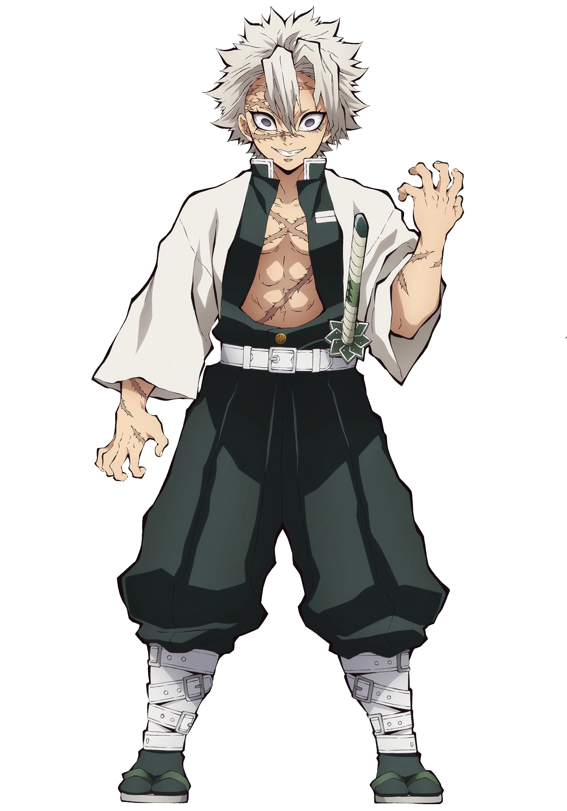
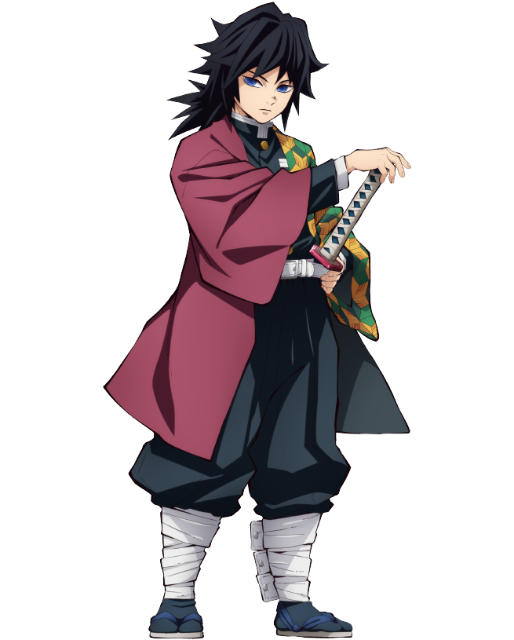

Heros
# Rank 1
Yoriichi Tsugikuni
Yoriichi Tsugikuni singlehandedly invented the original Sun Breathing Style
# Rank 2
Tanjiro Kamado
Tanjiro is very kind by nature and has been described by others as having very gentle eyes and a compassionate personamado
# Rank 3

Gyomei Himejima
Gyomei is the most powerful Hashira alive, surpassing his comrades in terms of endurance and martial skills.
# Rank 4
Sanemi Shinazugawa
The Wind Hashira is a living tornado, initially displaying his mettle during a friendly match against Giyu Tomioka.
# Rank 5
Giyu Tomioka
Giyu Tomioka is a lone wolf, preferring to finish his battles without wasting his breath on his opponents.
# Rank 6

Kyojuro Rengoku
Kyojuro Rengoku displays an enthusiastic desire to seek justice on behalf of those who cannot defend themselves.